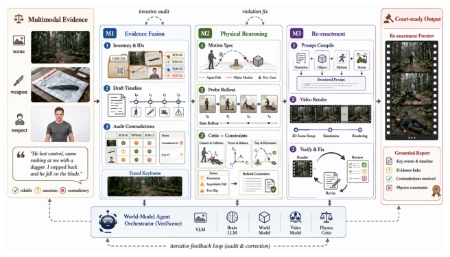
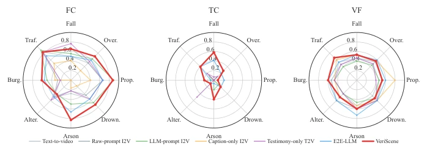
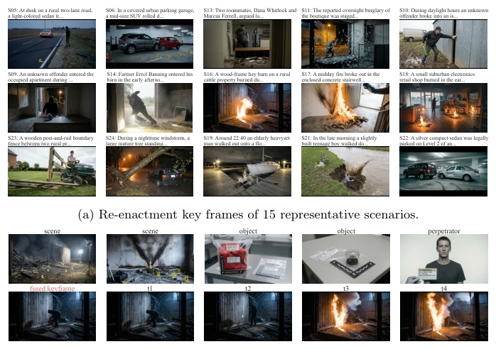
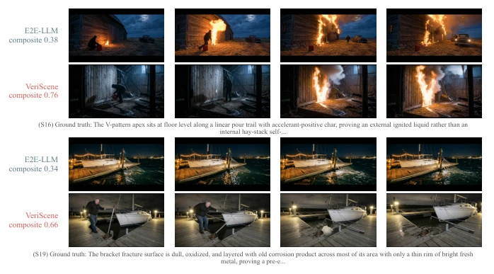
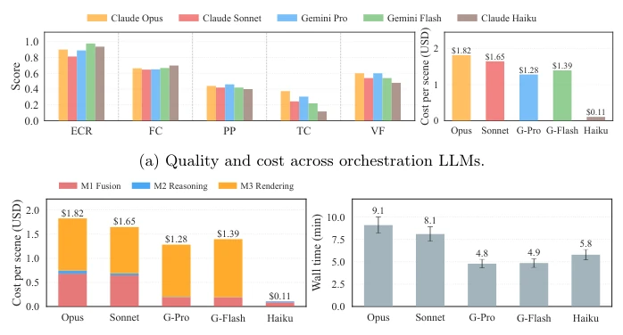

VeriScene: Reconstructing Crime Scenes from Legal Evidence via World-Model Agent
Kevin Chuanpu Fu, Yongsen Zheng, Zee Kin Yeong, Kwok-Yan Lam abspdf
论文点评Review
这篇论文给“法律科技”加了个物理引擎，试图用世界模型把碎片的证据拼成动态视频，听起来像《CSI》的 AI 版。亮点是引入了审计循环和物理约束，避免了端到端模型常见的“幻觉式结案”，让每帧画面都有证据溯源。但吐槽点也很明显：数据全是合成的，真实法庭上法官可不会轻易采信 AI 生成的“模拟视频”当铁证。它更像是一个高级的“演示工具”，而非真相机器。对于物理常识的修复确实有效，但流体动力学依然是硬伤。总的来说，是 Embodied AI 在垂直领域的一次有趣尝试，但离“智能法官”还差得远，更多是辅助理解而非裁决，且成本较高，依赖昂贵的 LLM 后端。
This paper adds a physics engine to "legal tech", attempting to use world models to piece fragmented evidence into dynamic videos, sounding like the AI version of "CSI". The highlight is the introduction of audit loops and physical constraints, avoiding the common "hallucinatory case closure" of end-to-end models, ensuring every frame has evidence tracing. But the drawbacks are obvious: all data is synthetic, and judges in real courts will not easily accept AI-generated "simulated videos" as ironclad evidence. It is more like an advanced "demo tool" rather than a truth machine. The repair of physical common sense is indeed effective, but fluid dynamics remains a fatal flaw. Overall, it is an interesting attempt of Embodied AI in a vertical domain, but far from an "intelligent judge", more for assisting understanding than adjudication, and with high cost, relying on expensive LLM backends.
研究动机Motivation
法庭裁决依赖证据重构，但现有方法主观性强，法官需 mentally re-create 案发过程，缺乏客观物理约束。直接提示生成模型会丢失证据、忽略矛盾且违反物理定律 [2]。现有 World Models 虽能生成动态场景，但缺乏法律证据的约束，无法追溯证据来源，且常产生视觉吸引力优先于物理正确性的结果。VeriScene 旨在解决证据碎片化、矛盾证词及物理不可行性问题，确保重构过程可审计、物理可信，将主观推测转化为可验证的物理重演，避免证据被无声丢弃或矛盾被模糊处理，为法律场景提供可解释的 AI 辅助。
Court rulings rely on evidence reconstruction, but existing methods are highly subjective, requiring judges to mentally re-create the crime scene process, lacking objective physical constraints. Direct prompting of generative models loses evidence, ignores contradictions, and violates physical laws [2]. Existing World Models can generate dynamic scenes, but lack legal evidence constraints, cannot trace evidence sources, and often produce results where visual appeal takes precedence over physical correctness. VeriScene aims to solve evidence fragmentation, contradictory testimony, and physical infeasibility issues, ensuring the reconstruction process is auditable and physically credible, transforming subjective speculation into verifiable physical reenactment, avoiding evidence being silently discarded or contradictions being blurred, providing explainable AI assistance for legal scenarios.
The system is divided into three modules. 1. Iterative Evidence Fusion: VLM integrates photos and testimony, Audit Agent checks omissions and contradictions, ensuring every sentence has evidence tracing, covering all evidence items through multi-round revisions, handling unreliable testimony, forcing citation markers. 2. World Model Physical Reasoning: Testing dynamics through Probe Rollouts, Physics Critic detects violations (e.g., glass splash direction), injecting constraints for correction, terminating on verification constraints, ensuring physical rationality, preventing motion from violating evidence records. 3. Reenactment Rendering: Compiling verified narrative and constraints into a Prompt, generating video by the video world model. Closed loop throughout, ensuring physical rationality and evidence traceability, keyframe synthesis and video generation are both controlled, supporting multiple LLM backends, ensuring security and integrity.

Fig. 1: Architecture of VeriScene.

Fig. 3: Per-metric comparison of VeriScene and baselines by case type.
Constructed 25 synthetic scene benchmarks, containing 139 photos and 65 testimonies, containing implanted unreliability, covering 7 categories such as fire, fall, etc. Metrics include Evidence Coverage Rate (ECR), Fact Consistency (FC), etc. VeriScene reached 0.7217 on FC, better than end-to-end baseline by 20.35%. Temporal coherence improved by 34.88%. Ablation experiments show audit and reasoning modules are both key. Cost analysis shows different LLM backends have significant impact, weak models are cheap but temporal coherence drops. Renderer limitations cause physical score fluctuations, water scenes are the hardest, proving physical reasoning remains challenging for complex fluids.

Fig. 5: Qualitative results of VeriScene.

Fig. 6: Re-enactments of E2E-LLM and VeriScene on two scenarios.

Fig. 7: Orchestration-LLM study on the 10-scene subset.